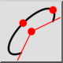
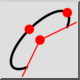
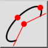
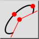

Ellips båge
Verktygsfält / ikon:
 

Meny: Rita > Ellips > Ellips båge
Genväg: E, A
Kommandon: ellipsearc | ea
Detta är en automatisk översättning.
Verktygsfält / ikon:
 

Meny: Rita > Ellips > Ellips båge
Genväg: E, A
Kommandon: ellipsearc | ea
Ritar ellipsbågar med ett givet centrum, större och mindre axel samt start- och slutvinklar.